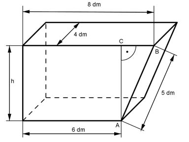

Pythagoras Aufgabe 71 Berechnen Sie die Höhe h des dargestellten Gefäßes in dm und das Volumen in dm³, wenn g1 = 6 dm, g2 = 8 dm, a = 5 dm und b = 4 dm betragen.  Satz von Pythagoras im Dreieck ABC: CB = 8 dm – 6 dm = 2 dm AB² = AC² + CB² |-CB AC² = h² = AB² - CB² h² = 5² - 2² = 21 dm² |√ h = 4,6 dm Es ist ein gleich dicker Körper mit einem Trapez als Grundfläche und der Dicke b. 6 dm + 8 dm V = -------------- * 4,6 dm * 4 dm 2 V = 128,8 dm³